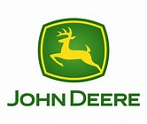

Gallery
Moments from my career and life
Technical Information Specialist III — ISG
19+ years driving quality, innovation & customer impact at John Deere
Technical Information Development leader with 15+ years at John Deere supporting Production and Precision Ag products. Experienced in leading and coaching global contributors, delivering service and diagnostic technical information for PDP and revision programs, and driving measurable improvements in quality, cycle time, cost, and technician efficiency.
Known for ownership of outcomes, people development, customer focus, and continuous improvement aligned to Customer Experience objectives.
BA English, Technical Writing — University of Northern Iowa
Project Management Certification — UW-Platteville (Masters Program)
Johnston, IA • Open to Silvis, IL / Des Moines, IA
Grew up in Bellevue, IA on a small 100-acre farm. Still helps in-laws farm 200 acres. Has a twin!
Click on any milestone to learn more
Sales / Customer / Tech Support
Built foundational skills in customer service, sales, and technical support before transitioning into the John Deere ecosystem.
Volt/Almon • Dubuque, IA
Led global authoring teams delivering parts and service information. Established standards and audits. Facilitated EPDP information flow and improved accuracy and usability.
Almon • East Moline, IL
Supported testing and deployment of authoring system enhancements. Continued leading teams in delivering high-quality parts information.

John Deere • Milan, IL
Provided advanced technical support to dealers across diagnostics, electrical, cab, and parts systems. Partnered with Engineering, Quality, Manufacturing, and Supply Chain to resolve complex issues.
John Deere • Waterloo, IA
Supported PDP launches, dealer training, and readiness. Used field feedback to improve documentation. Partnered cross-functionally to resolve complex technical issues.
John Deere • Johnston, IA
2025
Appreciation Award for leadership in enterprise system migration
PIN2PRODUCT
Enterprise-Adopted Initiative — recognized for innovation that scaled across the organization
Ongoing
Frequent presenter at CEP Conference, Hackathon Awards Ceremony, and enterprise training events
Tractor, Cotton, & Sprayer
Levels 2 & 3 Certifications; Service Fundamentals Certification
Exploring cultures and perspectives around the world — including India's rich history, food, and people
Staying on the cutting edge of tech trends, tools, and innovations
Always building, experimenting, and pushing to understand how things work
Growing food and keeping connected to agricultural roots on the family farm
From home projects to creative constructions — making ideas tangible
Hitting the links and enjoying time outdoors
Proud dad to Avery (16) and Carter (18), plus two loyal dogs. Grew up on a farm in Bellevue, IA with a twin sibling and continues to help the in-laws work 200 acres.
Moments from my career and life